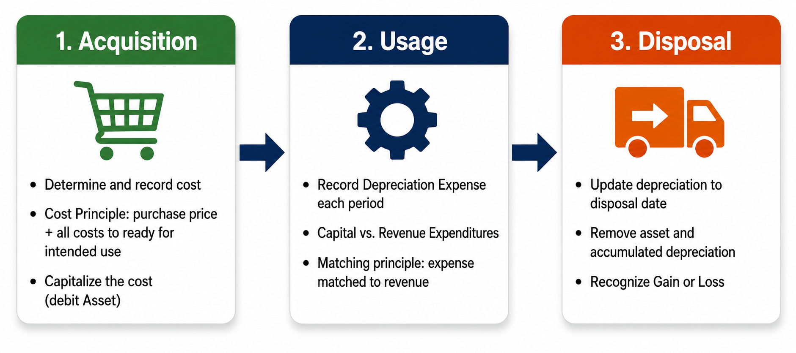
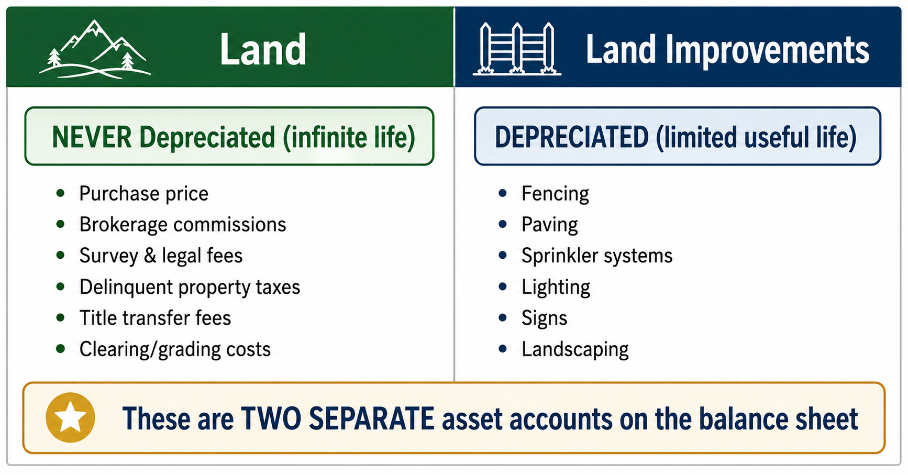
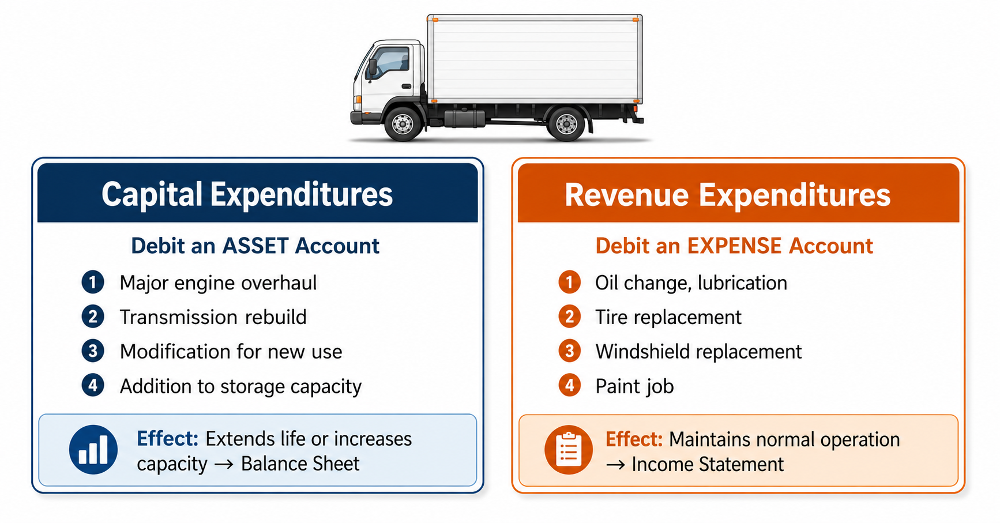
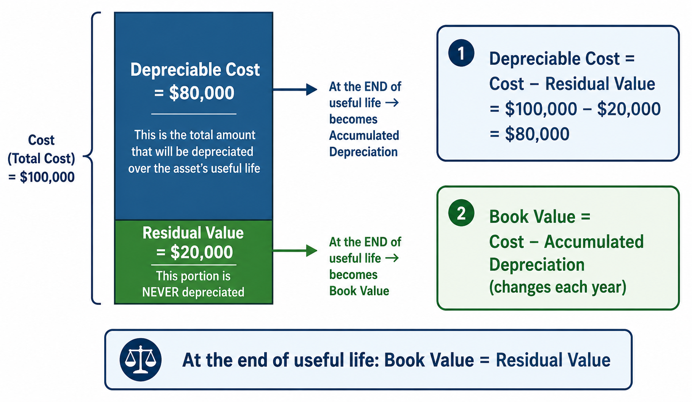
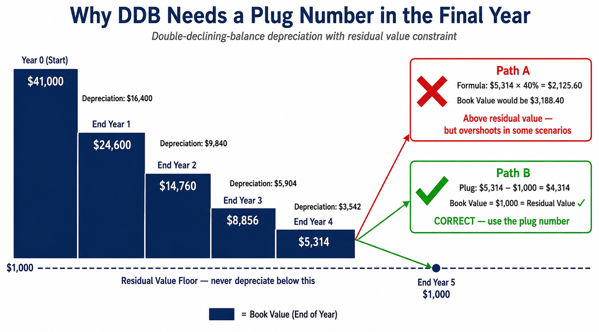
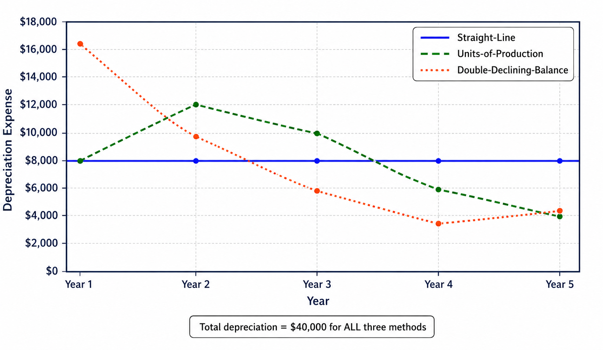

Measuring Cost, Depreciation Methods, and the Asset Turnover Ratio
Each link opens the lecture video at that topic. Timestamps are approximate — a topic may begin a few seconds before or after the mark, so step back a little if you land mid-sentence.
Think about a delivery truck that a company just purchased. It cost $41,000 and will serve the business for the next five years. Should the company record the entire $41,000 as an expense in the year of purchase? Of course not—that would distort income, making the first year look unprofitable while the truck continues to generate revenue for years to come. Instead, accounting requires us to spread the cost over the truck’s useful life. This process is called depreciation, and it is the heart of this chapter.
In Chapter 9, we follow the complete life cycle of a plant asset—from the moment a company acquires it, through the years of using it, and finally to its disposal. Along the way, you will learn exactly which costs get added to an asset’s price tag, how to calculate depreciation using three different methods, and how investors evaluate a company’s efficiency in using its assets.
Property, Plant, and Equipment—commonly abbreviated as PP&E—are assets that appear in the non-current section of the balance sheet. For an asset to be classified as PP&E, it must satisfy all three of the following characteristics:
A company owns a piece of land that it purchased five years ago but has never used for any business purpose. Is this PP&E? No. Even though it is long-term and tangible, it is not used in operations. It would be classified as a long-term investment, not PP&E. All three conditions must be met simultaneously.
Every plant asset goes through three distinct stages during its time with a company. Understanding this life cycle is the key to understanding this entire chapter:
Determine and record the cost of the asset. What costs are included?
Allocate the cost over the asset’s useful life through depreciation. Record capital vs. revenue expenditures.
Remove the asset from the books and recognize any gain or loss.

When a company acquires a plant asset, it records the asset at its historical cost—the actual amount paid for the asset. This follows the cost principle, which states that acquired assets should be recorded at their actual cost.
But what exactly counts as “cost”? It is not just the purchase price. The cost principle requires a company to capitalize all costs necessary to get the asset ready for its intended use. This includes the purchase price plus taxes, commissions, transportation, installation, testing, and any other amount required to prepare the asset for service.
The cost of land includes the following amounts paid by the purchaser:
Each of these costs is capitalized into the Land account because they are all necessary to prepare the land for its intended use.
Smart Touch Learning purchases land on August 1, 2026, for $50,000 by issuing a note payable. Additional costs paid in cash include:
The journal entry to record this purchase:
Let’s trace how the Land T-account builds up. The $50,000 purchase price goes in as a debit. Then each additional cost—the $4,000 taxes, $2,000 transfer fees, $5,000 demolition, $1,000 survey—also goes into the debit side of the Land account. The total balance: $62,000. Smart Touch Learning capitalizes the land at $62,000 because all of these costs were necessary to get the land ready for its intended use.
There is a crucial distinction you must remember: Land and Land Improvements are two entirely separate asset accounts.
On August 15, 2026, Smart Touch Learning pays $20,000 in cash for fences, paving, lighting, and signs on the new land.
These improvements will be depreciated over their estimated useful life. The land itself, however, remains at $62,000 and is never depreciated because it lasts forever.

Why is land never depreciated? Because land is permanent. No matter how much you use it, it will always be there. A building can collapse, a truck can wear out, but the land beneath them endures. That is why land is the only plant asset exempt from depreciation.
The costs capitalized for a building depend on how the company obtains it:
The cost of machinery and equipment includes:
Pay special attention to installation and testing costs. Why are they capitalized? Because these costs are absolutely necessary to get the equipment ready for its intended use. Without installation and testing, the equipment cannot operate. Once the asset is up and running, however, ongoing insurance, taxes, repairs, and maintenance costs are expensed as incurred—they are no longer capitalized.
Common examples include desks, chairs, file cabinets, display racks, and shelving. As with other plant assets, the cost of furniture and fixtures includes the purchase price (less any discounts) plus all other costs to ready the asset for its intended use, such as shipping and assembly.
Sometimes a company pays a single price to acquire several different assets as a group. This is called a lump-sum purchase (or basket purchase). Even though the company paid one lump-sum amount, accounting requires that each asset be recorded separately in its own account.
The problem is: how do we divide the single purchase price among the different assets? The solution is the relative-market-value method. We allocate the total cost based on each asset’s fair market value relative to the combined fair market value of all assets purchased.
On August 1, 2026, Smart Touch Learning pays $100,000 for both land and a building, signing a note payable. An appraisal indicates the land’s fair market value is $30,000 and the building’s fair market value is $90,000.
Step 1: Calculate each asset’s percentage of total fair market value.
| Asset | Fair Market Value | Percentage | Allocated Cost |
|---|---|---|---|
| Land | $30,000 | $30,000 ÷ $120,000 = 25% | $100,000 × 25% = $25,000 |
| Building | $90,000 | $90,000 ÷ $120,000 = 75% | $100,000 × 75% = $75,000 |
| Total | $120,000 | 100% | $100,000 |
Step 2: Record the journal entry.
Notice that we do not record each asset at its individual fair market value. The individual values are only used to determine the ratio for allocating the actual purchase price. The total debits must equal the total price paid ($100,000), not the total appraised value ($120,000).
Why does the company get to buy $120,000 worth of assets for only $100,000? This is precisely the advantage of a basket purchase—the buyer typically gets a discount by purchasing multiple assets together. The accounting question is simply how to split that discounted price fairly among the different assets.
After acquiring a plant asset, a company will inevitably spend additional money on it during the usage stage. These subsequent expenditures fall into two categories:
Example: Rebuilding an engine on a truck ($3,000) extends its useful life → Debit Truck
Example: Replacing tires on a truck ($500) maintains normal use → Debit Repairs & Maintenance Expense
Scenario A: Smart Touch Learning spends $3,000 to completely rebuild the engine on a five-year-old delivery truck. This extends the truck’s useful life beyond its original estimate, making it an extraordinary repair (capital expenditure).
Scenario B: Smart Touch Learning pays $500 cash to replace tires on the same truck. This is routine maintenance and does not extend the truck’s useful life or increase its efficiency—an ordinary repair (revenue expenditure).

Misclassifying these expenditures creates serious errors. If you treat a capital expenditure as an expense, you overstate expenses (understating net income) and understate assets on the balance sheet. The opposite error occurs if you capitalize an ordinary repair. Always ask: “Does this spending extend the life or improve the capacity of the asset?” If yes, capitalize it. If no, expense it.
We now move to the usage stage of the plant asset life cycle. The most important concept here is depreciation—a topic you first encountered in Chapter 3 as a deferred expense (an adjusting entry).
Several important points about depreciation:
To compute depreciation, three factors must be considered:
Of these three factors, only the capitalized cost is a known, historical fact. Both the useful life and the residual value are management estimates. This means that depreciation itself is inherently an estimate—which is one reason book value does not equal market value.
Two critical terms that students often confuse:
Depreciable cost is the maximum total amount of depreciation that will be recorded over the asset’s entire useful life. It does not change from year to year.
Book value is the asset’s remaining unallocated cost at any given point in time. It decreases every year as depreciation accumulates. At the end of the asset’s useful life, the total accumulated depreciation will equal the depreciable cost, and the book value will equal the estimated residual value.
Suppose Equipment A costs $100,000 and has a residual value of $20,000.
The residual value is the “floor”—you never depreciate an asset below its residual value.

The straight-line method allocates an equal amount of depreciation expense to each year of the asset’s useful life. It is the simplest and most commonly used method.
Smart Touch Learning purchases a delivery truck on January 1, 2026, with the following data:
Annual depreciation = ($41,000 − $1,000) ÷ 5 = $8,000 per year
The journal entry recorded each December 31:
| Date | Depreciation Expense | Accumulated Depreciation | Book Value |
|---|---|---|---|
| Jan. 1, 2026 | — | — | $41,000 |
| Dec. 31, 2026 | $8,000 | $8,000 | $33,000 |
| Dec. 31, 2027 | $8,000 | $16,000 | $25,000 |
| Dec. 31, 2028 | $8,000 | $24,000 | $17,000 |
| Dec. 31, 2029 | $8,000 | $32,000 | $9,000 |
| Dec. 31, 2030 | $8,000 | $40,000 | $1,000 |
Notice three important patterns:
When computing book value, always subtract the total accumulated depreciation from the original cost. Do not subtract yearly depreciation from the previous year’s book value—while both approaches give the same answer, the former reflects the true formula: BV = Cost − Accumulated Depreciation.
Unlike the straight-line method, which allocates a constant amount based on time, the units-of-production method allocates a varying amount of depreciation each year based on the asset’s actual usage.
When an asset’s usage varies significantly from year to year, this method better matches expenses with revenues. It treats depreciation as a function of use, not of time.
Using the same truck (cost $41,000, residual $1,000), Smart Touch Learning estimates the truck will be driven a total of 100,000 miles over its useful life with the following annual mileage:
Step 1: Depreciation per mile = ($41,000 − $1,000) ÷ 100,000 = $0.40 per mile
Step 2: Multiply the per-mile rate by actual miles driven each year.
| Date | Miles Driven | Depreciation Expense | Accumulated Depreciation | Book Value |
|---|---|---|---|---|
| Jan. 1, 2026 | — | — | — | $41,000 |
| Dec. 31, 2026 | 20,000 | $8,000 | $8,000 | $33,000 |
| Dec. 31, 2027 | 30,000 | $12,000 | $20,000 | $21,000 |
| Dec. 31, 2028 | 25,000 | $10,000 | $30,000 | $11,000 |
| Dec. 31, 2029 | 15,000 | $6,000 | $36,000 | $5,000 |
| Dec. 31, 2030 | 10,000 | $4,000 | $40,000 | $1,000 |
Notice that the depreciation expense varies each year depending on usage, but the total accumulated depreciation still reaches $40,000 and the final book value still equals the $1,000 residual value—just like the straight-line method.
The double-declining-balance (DDB) method is an accelerated depreciation method. It records more depreciation expense in the early years of an asset’s life and less in the later years. This approach is appropriate for assets that produce more revenue or are more efficient when they are new—such as computers or advanced machinery.
The DDB method multiplies the asset’s decreasing book value by a constant rate that is twice the straight-line rate:
Two critical features of this formula:
Using the same truck (cost $41,000, residual $1,000, 5-year life):
DDB rate = 2 ÷ 5 = 0.40 (or 40% per year)
In the last year, we abandon the formula and use a plug figure to bring the book value exactly to the residual value:
Year 5 Depreciation = Beginning Book Value − Residual Value = $5,314 − $1,000 = $4,314
| Date | Computation (BV × 2/5) | Depreciation Expense | Accumulated Depreciation | Book Value |
|---|---|---|---|---|
| Jan. 1, 2026 | — | — | — | $41,000 |
| Dec. 31, 2026 | $41,000 × 2/5 | $16,400 | $16,400 | $24,600 |
| Dec. 31, 2027 | $24,600 × 2/5 | $9,840 | $26,240 | $14,760 |
| Dec. 31, 2028 | $14,760 × 2/5 | $5,904 | $32,144 | $8,856 |
| Dec. 31, 2029 | $8,856 × 2/5 | $3,542 | $35,686 | $5,314 |
| Dec. 31, 2030 | Plug: $5,314 − $1,000 | $4,314 | $40,000 | $1,000 |
Despite using different amounts each year, the total accumulated depreciation still reaches $40,000—the same total depreciable cost as the other methods. The final book value equals the residual value of $1,000.

The DDB method always requires you to check the final year. If mechanically applying the formula would push the book value below the residual value, stop and use the plug number instead. This is the most common mistake students make on exams. The residual value is the floor—you can never depreciate below it.
While each method produces a different pattern of annual depreciation expense, all three methods result in the same total depreciation over the asset’s life—$40,000 in our truck example. The choice of method affects when the expense is recognized, not how much in total.

| Year | Straight-Line | Units-of-Production | Double-Declining-Balance |
|---|---|---|---|
| 2026 | $8,000 | $8,000 | $16,400 |
| 2027 | $8,000 | $12,000 | $9,840 |
| 2028 | $8,000 | $10,000 | $5,904 |
| 2029 | $8,000 | $6,000 | $3,542 |
| 2030 | $8,000 | $4,000 | $4,314 |
| Total | $40,000 | $40,000 | $40,000 |
Best for: Assets that generate revenue evenly over time (e.g., buildings).
Pattern: Depreciation is constant.
Best for: Assets whose wear depends on how much they are used (e.g., vehicles measured by miles, machinery by hours).
Pattern: Depreciation fluctuates with usage.
Best for: Assets that produce more revenue when new and lose efficiency quickly (e.g., computers, technology).
Pattern: Accelerated—front-loaded expense.
Which method should a company use? The answer depends on the asset itself. A company should choose the method that best matches the asset’s expense pattern against the revenue it helps generate. A building used steadily for 30 years? Straight-line. A delivery truck whose mileage varies dramatically by year? Units-of-production. A computer that becomes obsolete quickly? Double-declining-balance.
In our previous examples, we assumed the asset was purchased on January 1 and used for full calendar years. In practice, companies purchase assets at any point during the year. When this happens, depreciation must be prorated for the portion of the year the asset was actually in service.
A common convention used for this proration is the modified half-month convention:
The same truck (cost $41,000, residual $1,000, 5-year life) is placed into service on July 1, 2026 instead of January 1.
The company records only $4,000 of depreciation expense in 2026 because the truck was used for only half the year.
Partial-year depreciation applies to disposals too. If a company disposes of an asset during the year, it must record depreciation only up to the date of disposal, not for the entire year. Always calculate based on the number of months the asset was actually in service.
Because useful life and residual value are estimates, they may need to be revised as new information becomes available. When this happens, the company does not go back and restate prior years. Instead, it recalculates depreciation for the current and future years using the revised estimates.
Smart Touch Learning used the truck (cost $41,000, residual $1,000, 5-year life) for two full years using straight-line depreciation. After two years:
At the start of 2028, Smart Touch Learning now believes the truck will remain useful for six more years (total life of 8 years instead of 5). The residual value is unchanged at $1,000.
Revised depreciation = ($25,000 − $1,000) ÷ 6 = $4,000 per year
From 2028 onward, the company records $4,000 of depreciation expense each year. The prior two years at $8,000 each are not corrected.
Plant assets are reported at book value (cost minus accumulated depreciation) on the balance sheet. Companies may present PP&E in one of two ways:
Notice that Land is reported at its full historical cost with no accumulated depreciation. Land is never depreciated because it has an unlimited useful life.
The asset turnover ratio measures how efficiently a company uses its total assets to generate sales revenue. A higher ratio means the company is generating more sales per dollar of assets invested—a sign of greater efficiency.
Where:
Using data from Kohl’s Corporation’s annual report (amounts in millions):
Average total assets = ($14,333 + $13,606) ÷ 2 = $13,969.50
Asset turnover ratio = $19,204 ÷ $13,969.50 = 1.37 times
This means Kohl’s generated $1.37 in net sales for every $1.00 of assets invested. If the industry average is 1.9 times, Kohl’s is below average and should look for ways to increase net sales or decrease its asset base to improve efficiency.
Why do we use average total assets instead of ending assets? Because the balance sheet is a snapshot at one point in time, while net sales revenue covers the entire year. To make the comparison fair, we average the beginning and ending asset balances to approximate the assets available throughout the year.
When a company disposes of a plant asset—whether by selling it, discarding it, or trading it in—it must remove the asset from its books. The disposal process follows these steps:
The journal entry to record a disposal follows this logical structure:
Smart Touch Learning sells the delivery truck after 3 years for $20,000 cash. At the date of sale, accumulated depreciation totals $24,000 (using straight-line at $8,000/year).
Suppose instead the truck was sold for only $14,000.